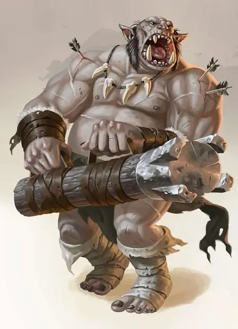

Огр таран
Ogre Battering Ram
Большой Великан, хаотично-злой

Класс Доспеха 14 (колечный доспех)
Хиты 59 (7к10 + 21)
Скорость 40 футов
| мод | спас | ||
|---|---|---|---|
| СИЛ | 19 | +4 | +4 |
| ЛОВ | 8 | −1 | −1 |
| ТЕЛ | 16 | +3 | +3 |
| мод | спас | ||
|---|---|---|---|
| ИНТ | 5 | −3 | −3 |
| МДР | 7 | −2 | −2 |
| ХАР | 7 | −2 | −2 |
Чувства тёмное зрение 60 футов, пассивное Восприятие 8
Языки Общий, Великаний
Опасность 4 (1100 опыта)
Бонус мастерства +2
Среда обитания Горы, Луг, Холмы
Особенности
Осадное чудовище. Огр наносит двойное повреждение объектам и строениям.
Действия
Сильный размашистый удар. Рукопашная атака оружием: +6 к попаданию, досягаемость 5 фт., одна цель. Попадание: 15 (2к10 + 4) дробящего урона, и огр может оттолкнуть цель на 5 фт. если она Огромная или меньшего размера.
Преграждение пути. До начала следующего хода огра броски атаки против него совершаются с помехой, а он получает преимущество на броски атаки, которые он совершает для провоцированной атаки, эта атака дополнительно наносит 16 (3к10) дробящего урона при попадании. Кроме того, каждый враг, который пытается выйти за пределы досягаемости огра без телепортации, должен преуспеть в спасброске Силы Сл 14, иначе его скорость ходьбы становится равна 0 до начала следующего хода огра.
Описание
Огр таран носит чудовищных размеров дубину, способную не только разбивать дверей в щепки, но и пробивать толпы врагов. Этих огров обучили выполнять две простые задачи: мчаться вперёд и разрушать вражеские строения и применять свою дубину, чтобы останавливать наступление противников.